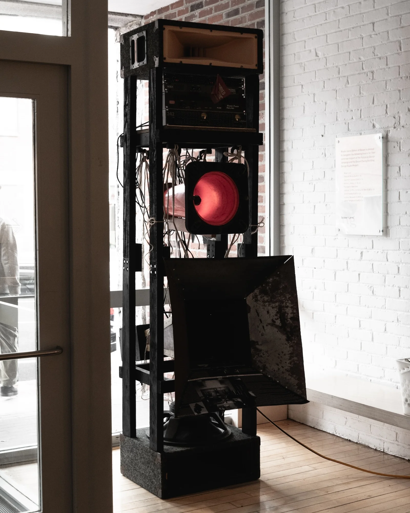
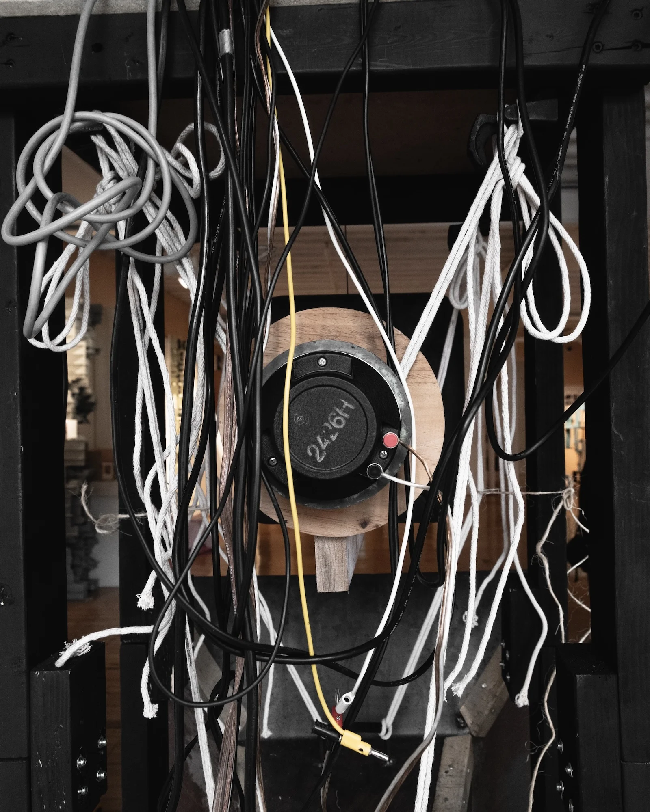
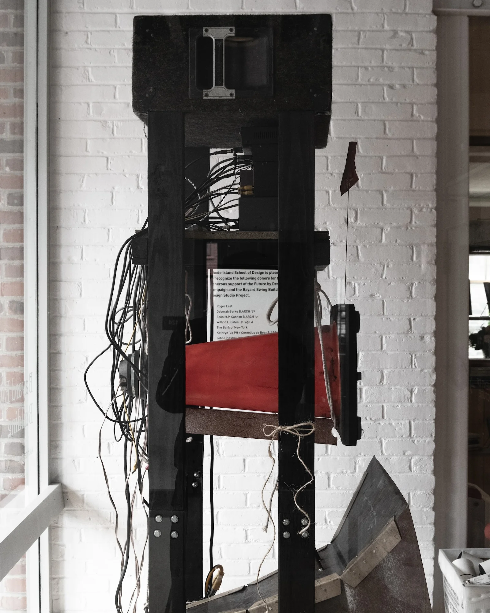
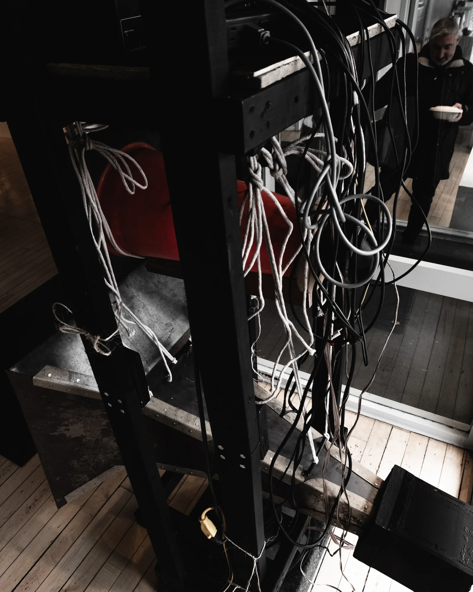
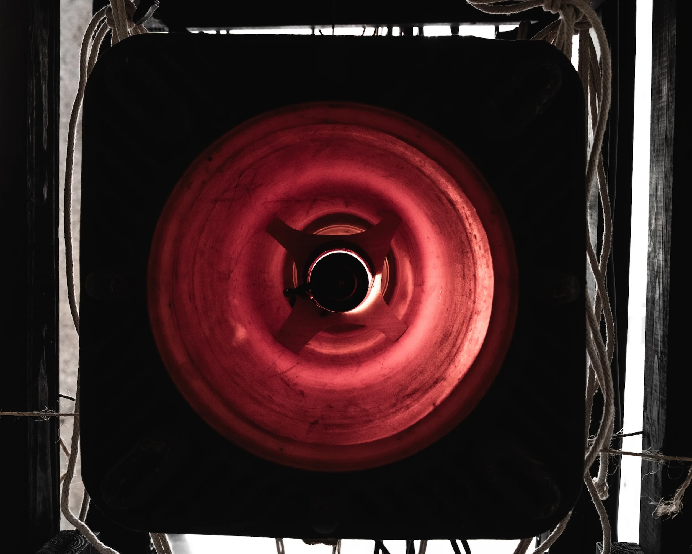

The Speaker Stack is the Shrine, Sculpture (Speaker Drivers, Steel, Found Objects, Audio Amplifiers, Wood), 21x31x90, 2026.
The speaker stack is a representation, a totem, a shrine, a ritual object in translating sound.
Each layer of the speaker stack directly correlates to its own architecture and program.
The bottom of the speaker stack, the bass, beneath a layer of grass, represents the ground and the dirt and the earth beneath our feet. We dance on this land, we kick our feet on this dirt together. The indigenous practice of drum circles and dance give thanks and homage to the ground beneath our feet, we celebrate by moving on the ground. The bass frequencies, with their long wavelengths, take seconds to fill a room, they have the longest history. They tell the stories of the elders, as the high frequencies tell the stories of the future, moving past our ears faster than we can perceive. We can hear down to 60hz, but no more than 20,000.
The speaker cabinet is a temple for the speaker driver, an architecture to acoustically amplifying its voice. Of the driver is the person in program, the cabinet is the architecture to make sure that voice is heard loud and clear. There's a reason the wound copper, the heart of what makes a speaker driver work, is called the voice coil. If your skin, like a drum, is the paper cone attached to the voice coil that's excited with voltage as purpose to make sound, what would you say?
The architecture of the horn lets your voice free, extending your voice through the people.
This mechanical object, the speaker driver, so technical in nature, explodes with sound when attached to the proper enclosure. The design of the box, makes a huge difference in the sound of the speaker, as the design of a space make a huge impact on the voices that pass through it. It's this balance that makes speakers so beautiful. It's not Ying and Yang, it's Kaisen: continuous improvement or an uphill battle. There's no perfect balance, and that's what makes the experience of spaces so unique.
The wood against the speaker diaphragm extends the frequencies through the enclosure and amplifies the sound. Coupling the body to the architecture in the same way creates this deep connection to the space you're interacting with.
The Yari Kanna Copy Paper, the hand carving wood tool in direct connection to the manufactured, machined, clean printer paper. It's what makes these ritual objects. The use, over and over. The sound system playing songs, hymns, archival recordings, live performances, hours and hours and miles and miles of wavelengths that makes this architecture tell its own story.
There is this ephemeral nature to an object that emits sound: you hear a song and then it's over, you may never hear it again, there's no evidence it was ever played, you may even forget it the next day, but you can always go back to this object and experiment it new, like a sunrise the next morning.
There is real power in the speaker stack. The bass frequencies are so long and big that you can feel them physically, the high frequencies if not tamed can sound shrill like a baby crying or nails on a chalkboard. Years and years of club design and acoustics for the discotheque have led to the design of systems with such personalities and are a testament to our desire to feel sound on a physical comfortable level. This amplifier sounds "warm". "The highs are easy on the ears". A kick box you can "feel in your chest". It's the same as the car audio people that put 12 speakers in the back of their car, pull up to an empty lot where all of their friends also put 12 speakers in the backs of their cars, and see which systems make your hair fly into the air the most when you push the bass.
This is the reason why in loudspeaker design, these tuned systems, not for the room or the venue, but for the people and their ears, are so highly praised, weather it be the smooth deep sound of house music at the paradise garage in heart of NYC the 90s, or the cold harsh punchy kicks reverberating through warehouses at tresor and berghain in Berlin. The most popular and praised speakers designers being Altec Lansing and JBL, speakers originally designed for large scale theatre use, and home audio listening. These designs have been remixed and adapted for small and large scale speaker systems since the 70s and modified versions of their designs are still used in massive venues around the world.
When sound is architecture, these speakers appealed to many programs. There's the designer; that wants them for the living room, the audiophile, that wants the best most "realistic" reproduction of sound for his record collection. "I want to feel like the Beetles are right in front of me on stage". The average consumer that knows the name is good and wants to listen to anything. The musician that wants personalized sound for amplifying their sound. The monk that treats the sound system as a device for deep listening, where electronically amplified sound is needed, like the ritual of dance music.
It is clear, the speaker stack is the temple for the voice.



